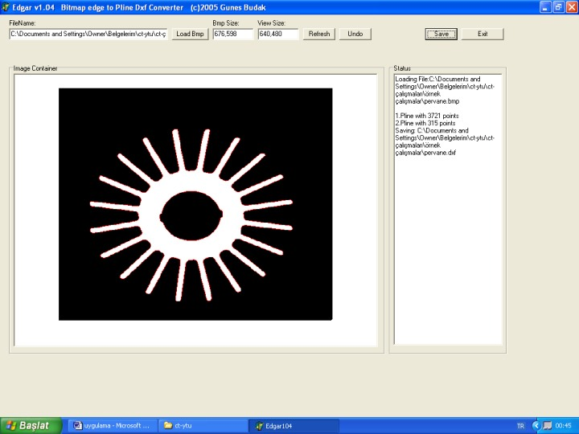

|
Görüntü iþleme yöntemiyle kesit konturlarýnýn elde edilmesi
Sýrayla alýnan kesit görüntüleri monokrom gri tonludur (Þekil 3.3) . Bu yüzden, boyut deformasyonuna uðramayacak þekilde optimum bir eþik deðeri seçilmelidir. Bunu saðlayabilmek için, bazý MATLAB fonksiyonlarý kullanýlarak, ikili (siyah-beyaz) görüntü formatýna dönüþtürülmüþtür. Daha sonra, kapalý bir þekil oluþturmak maksadýyla, ortaya çýkan görüntüye morfolojik görüntü iþleme fonksiyonu uygulanmýþ ve kenar arama operatörleri yardýmýyla iç ve dýþ konturlar oluþturulmuþtur. Böylece, nesnenin dýþýna sýnýr takibi algoritmasý tatbik edilerek sýnýr piksellerin konumlarýna ulaþýlýr.
Þekil 3.3 MATLAB programý yardýmýyla görüntü iþlemeye yönelik çalýþma penceresi
Aþaðýda yazýlan MATLAB fonksiyonunun çalýþtýrýlmasý sonucunda "workspace" penceresinde, görüntüye ait "contour" dizisi bulunmuþ olur ki; bu matrislerin her satýr ve sütunu ayný zamanda sýnýr piksellerinin, kartezyen koordinat sistemindeki (x,y) koordinatlarýna iþaret etmektedir. Ýþlem diðer kesitlere de aynen tatbik edilerek numune parçanýn 2-boyutlu konturlarýna ulaþýlýr.
function contour=konturbulma('*.dcm',thresh)
% dosya: dicom dosya adi
% thresh: olabilecek en dusuk contour pixel sayisi
% Or: contour=contourbulma('dicomdosya',20);
info = dicominfo(dosya)
I = dicomread(info);
BW = edge(I,'sobel');
SE = strel('square',3);
BWo = imdilate(BW,SE);
BWs = bwmorph(BWo,'skel',Inf);
[L,num] = bwlabel(BWs);
c=1;
for i=1:num
if nnz(L==i)>thresh
[row col]=find(L==i);
contour{c} = bwtraceboundary(BWs, [row(1), col(1)], 'W');
c=c+1;
end
end
3.3 CAD programýna aktarýlan 2D verilerden, 3D geometrik modellemeye geçiþ
Diziler halinde alýnan piksel koordinatlarý, Mastercam tasarým modülüne, ASCII formatýnýn algýlayabileceði þekilde *.doc uzantýsýyla gönderilir. Böylece CAD programýnda piksel koordinatlarý, "point" komutuyla geometrik "2D nokta bulutu" halinde ekrana getirilmiþ olur. Eðri uydurma metoduyla bu noktalardan "spline" geçirildikten sonra 3D modellemeye geçilebilmesini temin edecek þekilde, 2D düzlemsel eðriler kümesi, Þekil 3.4'teki gibi üst üste katmanlar halinde "merge" edilmiþtir. Son aþamada ise, olasý þekil deformasyonlarýný önlemek için her iki kapalý eðride bir "loft" komutu tatbik edilerek, yüzey örme iþlemi tamamlanmýþtýr. Bu çalýþmalardaki asýl amaç olan ve elimizde bulunan fiziksel parçaya oldukça yakýn boyutlarda oluþturulan CAD modeli Þekil 3.5'te göstermektedir. Tomografiden, görüntü iþleme yazýlýmlarýna aktarýlan görüntü, Tablo 3.1'de belirtilen birim pikselin ölçü karþýlýðý olan 0.365 deðerinden ötürü büyük çýkmaktadýr. Bu sebepten, CAD modelin yüzeyi tüm yönlerde ayný oranda küçültülerek, parçanýn þekil gerçek boyutlarýna getirilmiþtir.

Þekil 3.4 Fanýn 2D konturlarýnýn bir araya getirilmesiyle oluþan perspektif görünüþü
Þekil 3.5 Fan parçasýnýn "loft" komutuyla oluþturulan 3D yüzey modelinin gösterimi
3.4 Bitmap görüntüyü polyline formunda grafiðe çeviren bir program uygulamasý
Nokta bulutunu elde etmenin alternatif bir yolunu bulmak maksadýyla, bu çalýþma içerisinde Pascal dilinde geliþtirilen prototip yazýlým ekraný Þekil 3.6'da gösterilmektedir. MATLAB görüntü iþleme programý yardýmýyla *.bmp uzantýsýyla kaydedilen kesit görüntüsü, bu yazýlým modülünün içine gönderilmiþtir. Ýkili görüntü formatýnda sýnýr takibi algoritmasý Þekil 3.7'de verilen yazýlým ile tüm kesitler *.dxf uzantýlý dosyalara dönüþtürülerek Mastercam'ye tanýtýlmýþtýr.

Þekil 3.6 Bitmap görüntüyü polyline formunda kýrýk çizgiler topluluðuna dönüþtüren program penceresi
Þekil 3.7 Raster görüntüden vektörel geometriye geçiþ programýnýn akýþ diyagramý
|